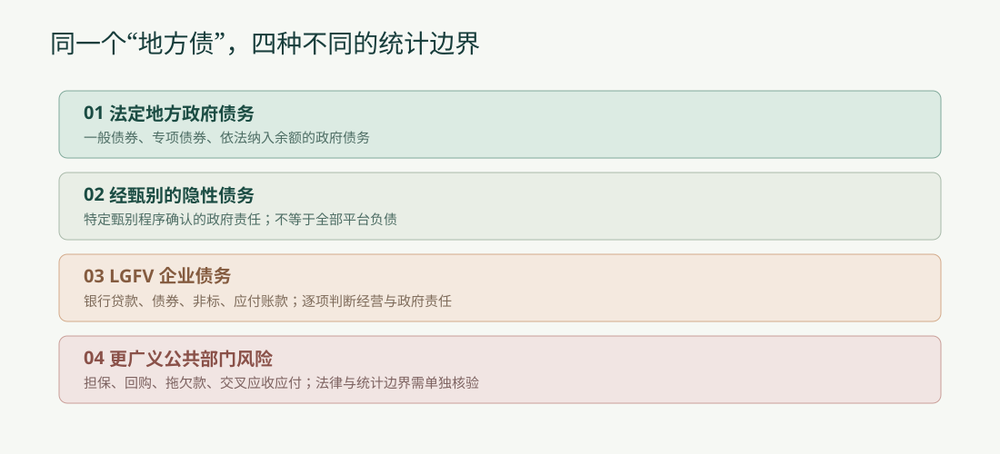

01｜先给结论：化债是资产负债表重组，不是简单核销
截至 2026 年 9 月，财政部披露的 6 万亿元置换限额发行进度已达 98.3%。这说明置换工具接近完成，却不意味着地方政府、融资平台和供应商之间的所有债权债务已经消失。[S3]
要理解这轮化债，必须把三个问题拆开：第一，债务是否被纳入法定预算；第二，债务成本和期限是否改善；第三，债务主体是否拥有可持续的现金流。前两项可以通过债券置换较快改善，第三项需要财政收入结构、项目收益和平台治理的长期变化。
一个地方可能“短期不再缺流动性”，但仍然“长期缺少偿债收入”。把两者混为一谈，会高估化债的完成度。
02｜四种债务边界：为什么不同报告里的数字差很多
地方政府债务不是单一统计对象。法定地方政府债务、经甄别的隐性债务、融资平台企业债务和更广义公共部门风险，法律责任、预算处理和统计口径各不相同。

| 口径 | 典型内容 | 回答的问题 | 主要误区 |
|---|---|---|---|
| 法定地方政府债务 | 一般债、专项债及纳入余额的政府债务 | 预算内、限额内债务有多少？ | 误以为覆盖所有平台债务 |
| 甄别后的隐性债务 | 经政策程序确认需要化解的政府责任 | 既定口径下还需化解多少？ | 误以为等于所有国企负债 |
| LGFV 企业债务 | 贷款、债券、非标、应付账款 | 平台是否有独立经营现金流？ | 把企业债务全部并入政府 |
| 广义公共部门风险 | 担保、回购、欠款、交叉应收应付 | 风险会向哪些部门传导？ | 把估算口径当作法定余额 |
03｜2024 年以来的政策组合：6 万亿元加 4 万亿元
财政部在 2024 年 11 月披露，2023 年末经逐个项目甄别、逐级审核上报的地方政府隐性债务余额为 14.3 万亿元。政策组合并非单一的 10 万亿元现金拨款，而是由不同工具组成。[S1]
| 工具 | 安排 | 实际作用 |
|---|---|---|
| 增加债务限额 | 6 万亿元，2024—2026 年每年 2 万亿元 | 将符合条件的存量隐性债务置换为法定债务 |
| 新增专项债券化债安排 | 连续 5 年，每年 8000 亿元，合计 4 万亿元 | 补充政府性基金财力，用于化债 |
| 棚改相关存量债务 | 2029 年及以后到期的 2 万亿元按原合同偿还 | 仍需按原合同履约，不能算作已核销 |
官方据此测算，2028 年底前地方需要消化的隐性债务总额将从 14.3 万亿元降至 2.3 万亿元，平均每年需要消化的规模从 2.86 万亿元降至约 4600 亿元；政策测算累计可节约利息支出约 6000 亿元。[S1][S2]
因此，6 万亿元是置换限额，4 万亿元是专项债券资金安排；两者都不是无偿财政拨款，也不能被解释为债务本金被直接免除。
04｜最新进度：法定债务余额上升，不等于置换失败
截至 2026 年 9 月，1—9 月发行用于置换存量隐性债务的专项债券 1.8977 万亿元，完成当年 2 万亿元限额的 95%；2024—2026 年合计 6 万亿元置换限额的发行进度达到 98.3%。[S3]
另一方面，财政部公布的地方政府债务余额为：2025 年末 54.8231 万亿元，2026 年 9 月末 60.6539 万亿元；2026 年 9 月末债务余额处于 63.1874 万亿元的全国限额以内。[S4][S5]
这并不矛盾。符合条件的隐性债务被置换后，会从原来的预算外或企业主体形式，转为法定地方政府债务；法定余额可能上升，而特定口径下的隐性债务下降。余额上升本身既不能证明政策失败，也不能证明总风险已经下降。
要评估真实变化，需要并行观察：法定债务净增量、隐性债务核减量、平台企业负债和现金流、政府拖欠款、债务到期结构以及地方可支配财力。
05｜地方财政为什么仍然承压：收入责任错配与土地收入下滑
2025 年地方一般公共预算本级收入为 12.2082 万亿元，中央对地方转移支付收入约 10.1925 万亿元；地方一般公共预算支出为 24.4361 万亿元，占全国一般公共预算支出的 85%。地方支出责任远高于本级一般公共预算收入所能单独覆盖的规模。[S6]
土地收入则连接着政府性基金预算、土地整理、基建项目和部分融资平台现金流。2025 年决算口径下，国有土地使用权出让金收入 4.0624 万亿元，国有土地收益基金收入 847.16 亿元，农业土地开发资金收入 52.13 亿元，三项合计 4.1523 万亿元，比上年下降 14.7%。[S7]
2026 年 1—10 月，地方政府性基金预算本级收入同比下降 20.4%；其中国有土地使用权出让收入 1.8526 万亿元，同比下降 25.8%。[S8]
土地收入减少可能沿着“政府性基金收入—项目回款—平台经营现金流—银行与供应商风险”的链条传导。但不同地区对土地的依赖程度不同，人口净流入、产业税源和资源禀赋也不同，不能把全国数据直接套到某个县。
06｜债务置换解决什么，又没有解决什么
它能改善的四件事
- 利息成本：用成本更低的政府债券替代部分高成本融资，释放利息现金流。
- 期限结构：把集中到期、滚动续借压力转成期限更长、偿还节奏更清晰的债券。
- 透明度：纳入预算和法定债务管理，提高人大审查与财政统计的可见性。
- 流动性：减少地方在短期内依赖借新还旧的压力。
它不会自动做到的五件事
- 不会自动核销本金。
- 不会为没有经营现金流的项目创造偿债收入。
- 不会自动修复地方税源和支出责任错配。
- 不会因为平台改名、合并或转型就让企业负债消失。
- 不会自动清偿所有工程款、供应商欠款和担保责任。
07｜广义债务估计：IMF 的 90% GDP 与财政部余额不是同一口径
IMF 2026 年专题报告估计，截至 2025 年末，中国官方地方政府与地方政府融资平台债务合计约为 GDP 的 90%，其中 LGFV 债务约占 GDP 的 51%。这是 IMF 按其广义公共部门分析口径进行的估计，不是中国财政部公布的法定地方政府债务余额。[S9]
IMF 将地方支出责任与收入分配之间的纵向财政失衡，视为融资平台长期扩张的重要背景；同时讨论土地收入下滑、平台现金流不足、银行和地方企业交叉敞口所带来的宏观金融外溢风险。[S9]
这一估计有分析价值，但不能简单拿 90% GDP 减去官方债务余额，得出一个精确的“遗漏债务”。平台债务的市场化收入、政府性收入、隐性担保和实际控制关系，需要逐项判断；广义合并口径适合评估系统风险，不替代法律责任认定。
08｜如何评估一个省、市、县的债务风险
| 维度 | 核心指标 | 关键问题 |
|---|---|---|
| 显性债务 | 一般债、专项债余额、限额使用率、到期结构 | 法定债务多大、何时到期？ |
| 预算偿付能力 | 本级收入、转移支付、债务付息、刚性支出 | 自有财力能否覆盖基本支出与利息？ |
| 土地财政 | 土地出让收入、成交面积和价格、政府性基金收入 | 土地收入下降是否结构性？ |
| 平台经营 | 经营性收入、应收账款、政府补助、利息保障倍数、短债占比 | 平台能否靠市场收入偿债？ |
| 现金流与欠款 | 工程款拖欠、应付账款、票据逾期、再融资依赖 | 风险是否已传到供应商和银行？ |
| 人口与产业 | 常住人口、就业、税源、产业集中度、房屋库存 | 未来税基和公共服务需求如何变化？ |
债务率必须注明分母。以 GDP 为分母的债务率，与以地方一般公共预算收入为分母的债务负担率回答不同问题。利息保障倍数也要明确是否把政府补贴、应收政府款项算作经营收入。
09｜一个简化的置换计算
假设某地有 1000 亿元符合条件的旧债，原融资成本为 6%，置换后债券成本为 2.5%，理论年度利息差为：
1000 亿元 × (6% − 2.5%) = 35 亿元 / 年
这只是演示，不是任何省市的真实节息金额。真实节息还取决于旧债利率分布、置换比例、发行费用、期限和偿还安排。若本金仍然存在，35 亿元只是利息现金流改善，不是债务本金减少。
10｜政策判断：化存量与改增量必须同时进行
存量端：先核实债务主体和法律责任，再区分公益性、准公益性和商业性项目。对可持续项目做期限和利率重组；对没有经营现金流的商业平台依法重组或退出；对真实政府责任纳入预算并公开偿付安排。
增量端：重构中央与地方收入、支出责任；降低地方对土地一次性收入的依赖；专项债项目建立可核验的现金流和偿债来源；融资平台不得以隐性担保替代商业风险定价。
风险处置端：避免“一刀切”停投或突然违约，造成公共服务中断、供应商连锁倒闭和银行资产质量恶化。对不可持续平台，应在识别资产、债权人、公共服务义务和系统性外溢之后，有序推进重组。
11｜结论与开放问题
地方债务化解已经从单纯压降隐性债务，转向“置换存量、调整期限、显性化管理、重组平台、重构财政关系”的组合过程。置换进度接近完成，说明短期流动性缓释工具已经落地；但法定地方政府债务余额上升、土地收入承压和广义 LGFV 风险仍然存在，说明地方资产负债表修复尚未完成。
判断真正的化债成功，至少要看到四个变化：隐性债务和拖欠款真实核减；地方债务利息与到期压力下降；融资平台经营性现金流能够覆盖自身债务；地方财政收入结构与支出责任逐步匹配。
下一步最有价值的工作，是建立省级与地市级债务、土地收入、转移支付、平台财务和欠款事件面板，并对重点地区进行逐笔、逐主体的现金流核验。
来源定位：正文 [S1]—[S9] 均指向原始政策、预算和独立研究资料。
参考来源
- 财政部，《增加地方政府债务限额置换存量隐性债务有关政策情况新闻发布会文字实录》，2024-11-09。原文
- 财政部，《关于 2025 年中央和地方预算执行情况与 2026 年中央和地方预算草案的报告》，2026-03-16。原文
- 财政部，《2026 年前三季度财政收支情况新闻发布会文字实录》，2026-10-23。原文
- 财政部债务管理司，《2026 年 9 月地方政府债券发行和债务余额情况》，2026-10-27。原文
- 财政部，《2025 年和 2026 年地方政府一般债务余额情况表》，2026-03-24。原文
- 财政部，《关于 2025 年中央和地方预算执行情况与 2026 年中央和地方预算草案的报告（摘要）》，2026-03-06。原文
- 财政部，《2025 年地方政府性基金收入决算表》，2026-09-16。原文
- 财政部，《2026 年 1—10 月财政收支情况》，2026-11-19。原文
- IMF, Local Government Finances in China: Policy Options to Tackle the Debt Overhang, 2026-09-25. 原文